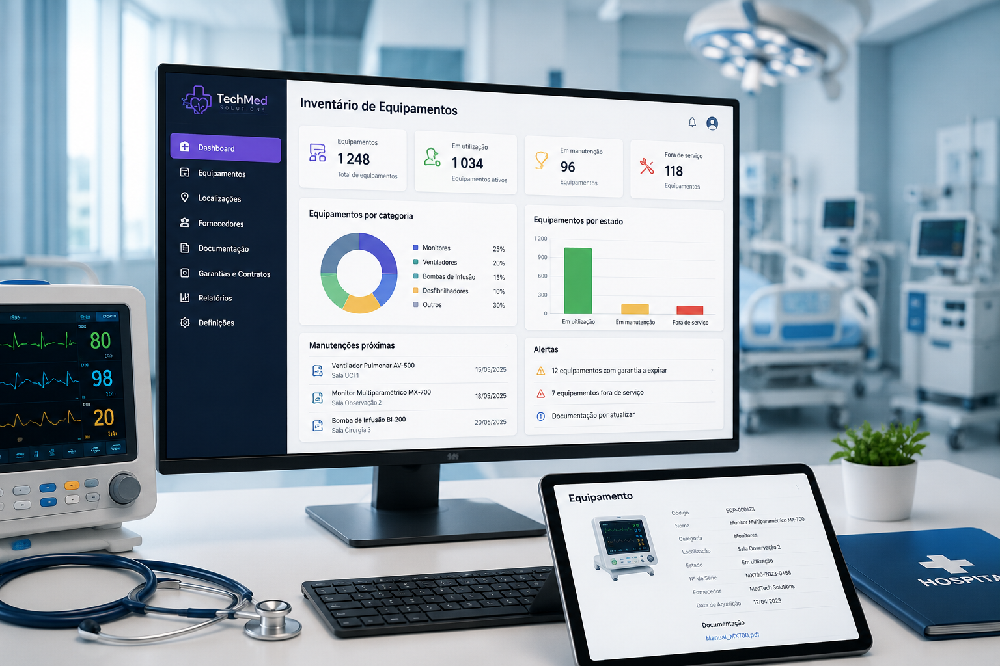

A TechMed Solutions ajuda hospitais a gerir o inventário de equipamentos médicos de forma centralizada, segura e eficiente.
Conhecer Serviços
A TechMed Solutions nasceu com o objetivo de apoiar instituições de saúde
na organização e digitalização dos seus processos internos, promovendo uma
gestão mais eficiente, segura e acessível da informação associada aos
equipamentos médicos.
Através de uma plataforma simples e intuitiva, procuramos reduzir a
dependência de registos manuais, facilitar o trabalho dos profissionais
responsáveis pela gestão hospitalar e contribuir para uma maior qualidade
e segurança nos serviços de saúde.
Apoiar hospitais na transição para processos digitais mais organizados, seguros e eficientes.
Desenvolver soluções tecnológicas simples, intuitivas e adaptadas às necessidades do contexto hospitalar.
Contribuir para uma gestão hospitalar mais eficaz e para melhores condições de apoio aos profissionais de saúde.
Entre em contacto connosco para obter mais informações sobre os nossos serviços.